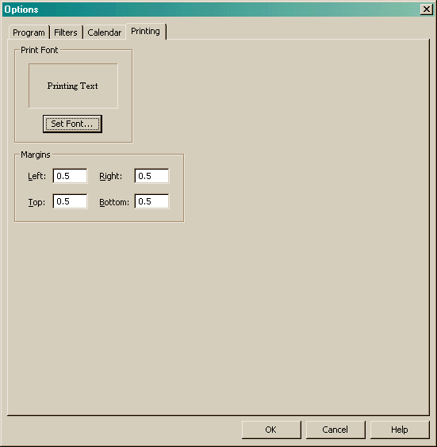

The Printing option page is used to set the font you wish to use when printing and the page margins.

The Set Font button in the Print Font section will allow you to set the font that will be used for all views when printing.
The Margins section allows you to specify the page offsets when printing. It should be noted that you can usually never print right up to the edge of a page, this is due to physical limitations of the printer.